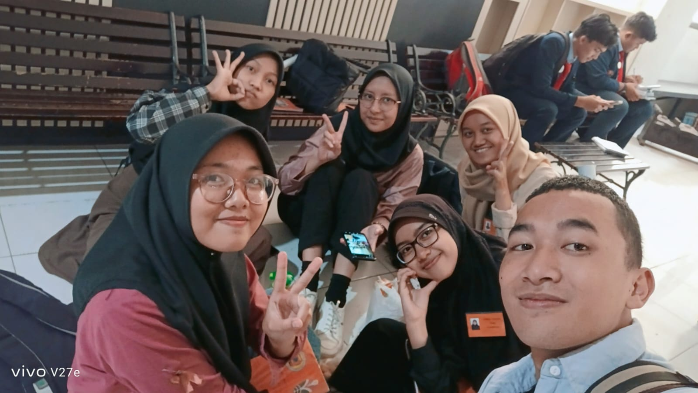

geng kapak
Dulu kita cuma lima orang yang bertemu biasa saat awal kuliah, tanpa pernah tahu kalau pertemuan itu bakal jadi salah satu hal paling berharga di hidupku.
sebuah catatan terima kasih untuk empat sahabat yang membuat masa kuliah terasa ramah
Empat orang yang ingin
kuceritakan
Catatan kecil untuk empat orang yang kehadirannya membuat hari-hari kuliah yang melelahkan selalu terasa menyenangkan untuk dijalani.
Catatan Hilya: Di antara kita berlima, aku sering merasa jadi orang yang paling beruntung karena pernah dipertemukan dengan kalian berempat di waktu yang tepat.
Gimana Semua Ini
Bisa Terjadi
Kalau diingat-ingat lagi, lucu ya. Awalnya kita cuma lima orang yang kenalan biasa pas masa awal kuliah tahun 2023. Masih sama-sama canggung, bingung nyari gedung kelas, dan belum ada kepikiran bakal sedekat ini.
Karena sering ada di kelas yang sama dan mulai sering nunggu bareng di selasar FPIPS, akhirnya kita bikin grup WhatsApp. Waktu itu beneran nggak ada niat sedikit pun buat bikin "geng" atau kelompok khusus.
Sampai suatu hari, tiba-tiba Deffran nyeletuk julukan "geng kapak" ke kita. Nama yang super random, tanpa filosofi muluk-muluk, tapi entah kenapa malah nempel erat dan keterusan kita pakai sampai sekarang.
Agustus 2023 — PMB
Bertemu pertama kali di kampus, kenalan biasa sebagai mahasiswa baru.
Semester Awal
Mulai sering jalan bareng, nunggu kelas di selasar, dan bikin grup obrolan.
Celetukan Deffran
Diberi julukan "Geng Kapak" yang awalnya dianggap candaan lewat.
Hingga Sekarang
Keterusan pakai nama itu sampai masuk semester akhir bersama-sama.

Arsip Perjalanan & Cerita Kita
Nggak semua momen sempat tertangkap kamera, tapi setiap tawa di selasar FPIPS, jalan malam di Braga, sampai hal-hal random yang kita lewati bersama tersimpan rapi di sini—sebagai bukti betapa berharganya hari-hari itu buat aku.
Tentang Hal-Hal Kecil
& Rasa Syukur
"Dulu aku kira masa kuliah cuma soal bertahan dan menyelesaikan tugas. Aku nggak pernah menyangka kalau di perjalanan ini, aku bakal menemukan orang-orang yang bikin aku merasa begitu diterima."
Kalau diingat lagi, aku datang ke awal perkuliahan dengan hati yang cukup berjarak. Aku nggak punya banyak ekspektasi tentang pertemanan, dan sempat percaya kalau fase ini mungkin bakal kulewati sendirian aja. Ada bagian dari diriku yang ragu—apakah di tempat baru ini, aku bisa menemukan orang-orang yang tulus dan mau menerimaku apa adanya.
Tapi kehadiran kalian pelan-pelan meruntuhkan semua keraguan itu. Bukan lewat hal-hal yang megah atau janji yang muluk-muluk, melainkan lewat kehadiran yang sederhana tapi selalu ada. Kalian menerima kekuranganku tanpa menuntutku jadi orang lain. Di hari-hari di mana aku merasa lelah, bingung, atau nggak yakin sama diri sendiri, ada kalian yang diam-diam bikin duniaku terasa jauh lebih ramah dan aman.
Dari luar, kita mungkin cuma terlihat seperti lima orang yang kebetulan sering jalan bareng dan ngetawain hal-hal receh. Tapi buatku, persahabatan ini jauh lebih dalam dari itu. Kalian adalah alasan kenapa masa kuliah yang berat ini punya banyak ruang hangat untuk diingat, dan alasan kenapa aku hari ini bisa percaya lagi pada ketulusan.
Ada hal-hal yang mungkin jarang—atau terlalu malu—untuk kusampaikan langsung pas kita lagi kumpul. Karena itu, sebelum langkah kita berlanjut ke babak berikutnya, aku menuliskan sebuah catatan kecil untuk kalian satu per satu. 🤍
Ada yang Tertulis
untuk Masing-Masing
Empat amplop bersegel untuk empat orang yang sangat berarti di hidupku. Buka amplop milikmu dengan tanggal lahirmu ya.
geng kapak
Hilya · Uwa · Umi · Tyan · Nass
Terima kasih sudah hadir dan mewarnai perjalanan masa kuliahku.
Ke mana pun langkah membawa kita nanti, kalian berempat akan selalu punya tempat yang hangat dan berharga di hidupku.
dengan rasa syukur yang tulus,
hilya 🤍